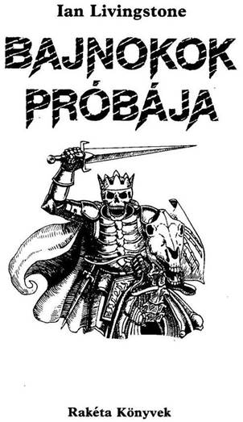
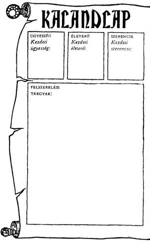
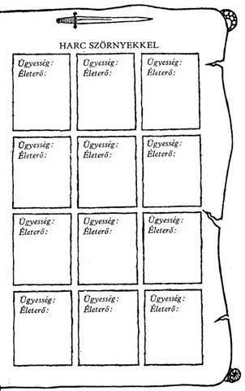
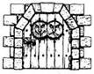
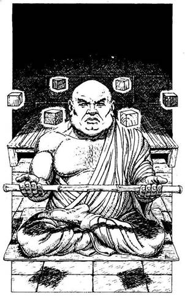

A mű eredeti címe:
Trial of Champions
Első kiadás:
Penguin Books Ltd, Harmondsworth,
Middlesex, England
Brian Williams illusztrációival
Fordította:
Varsányi Mária
© Ian Livingstone, 1896
Hungarian translation Varsányi Mária, 1990
Ennek a könyvnek te vagy hőse. Te vívsz meg a kocka segítségével az óriásokkal és a szörnyekkel, magad döntesz, hogy merre haladj tovább, kivel barátkozz és kivel csatázz. Nem pusztán az író fantáziája irányítja a történetet, hanem a te bátorságod, kíváncsiságod, leleményességed, kalandvágyad és józan eszed is.
Játék és regény egyszerre, amit a kezedben tartasz. Kalandos vállalkozás, amelybe bele is lehet bukni, de ha jól döntesz, sikerrel jársz.
Így hát ezt a könyvet ne úgy olvasd, ahogy egyébként olvasni szoktál. Mint látod, itt még az oldalak sincsenek megszámozva a bevezető után, hanem a hosszabb-rövidebb bekezdések viselnek számokat egytől négyszázig. Ezek között előre-hátra lapozva haladsz előre a történetben a saját igényeid szerint. Ha kardot rántasz az ellenségre, máshová lapozol, mintha elbújnál előle.
Barbár harcosok, varázslók, szörnyetegek, törpék népesítik be ezt a fantasztikus világot. Mi kell ahhoz, hogy ne bukj el közöttük? Csak az, ami a mindennapi élethez is: ügyesség, jártasság, ötletesség; az, hogy felkészülten várd a nehézségeket.
És Szerencse, amely nélkül az előző három talán mit sem ér, de ha csak erre számítasz, biztosan cserbenhagy.
Hogy mit jelent az ÜGYESSÉG, ÉLETERŐ és SZERENCSE ebben a könyvben, megtudod a következőkből. Ha netán nem lenne teljesen világos a dolog, ne törődj vele; bátran előre! Vágj neki az olvasásnak, menet közben minden a helyére kerül! De ha elfelejtenéd, hogyan kell jól megvívni egy csatát, hogyan menekülhetsz, hogyan gyógyíthatod magad a játék szabályai szerint, nyugodtan visszalapozhatsz.
Játékszabály
Mielőtt belevágnál ebbe a kalandba, fel kell mérned, mennyire vagy erős, illetve mennyire vagy gyenge. Dobókockával döntsd el kezdő pontjaidat. A 14. oldalon találod a Kalandlapot, amelyre feljegyezheted kalandod részleteit. Ugyanitt jelölheted ÜGYESSÉG és ÉLETERŐ pontjaidat is.
Jól teszed, ha ceruzával írod a pontokat a Kalandlapra vagy fénymásolatot készíttetsz erről az oldalról, hogy újabb játékra is felhasználhasd.
ÜGYESSÉG, ÉLETERŐ ÉS SZERENCSE
Dobj egy kockával. Adj 6-ot a dobott számhoz, és az összeget írd be a Kalandlap ÜGYESSÉG négyzetébe. Most dobj két kockával, és az eredményhez adjál 12-t, a kapott számot írd be az ÉLETERŐ négyzetbe.
Van egy SZERENCSE rovat is. Ehhez egy kockával dobj, és 6-ot adj az eredményhez, majd az összeget írd be a SZERENCSE négyzetbe.
Különböző okok miatt, melyeket majd részletesen elmagyarázunk, ÜGYESSÉG, ÉLETERŐ és SZERENCSE pontjaid a kalandok során folyamatosan változnak. Pontosan kell vezetned őket, ezért azt tanácsoljuk, hogy kis betűkkel írj a négyzetekbe vagy tarts kéznél radírt. De soha ne töröld ki a kezdeti pontjaidat, mert bár további ÜGYESSÉG, ÉLETERŐ és SZERENCSE pontokat szerezhetsz, összegük soha nem haladhatja meg a kezdeti értéket, kivéve néhány nagyon ritka alkalmat, amikor a megfelelő oldalon ezt az utasítást kapod.
ÜGYESSÉG pontjaid kardvívó tudásodat és általános harci tapasztalatokat mutatják. Nem árt minél több ilyen pontra szert tenni. Az ÉLETERŐ pontok jelzik kondíciódat, az akaraterődet, hogy túlélj egy-egy helyzetet, továbbá eltökéltségedet, állóképességedet; minél magasabb az ÉLETERŐ pontszám, annál hosszabb ideig maradhatsz életben. A SZERENCSE pontok mutatják, mennyire vagy szerencsés ember.
A szerencse és a varázslat az úr abban a fantasztikus birodalomban, amelybe most behatolsz.
A CSATA
Sűrűn találsz majd olyan oldalakat, ahol azt az utasítást kapod, hogy küzdj meg valamilyen teremtménnyel. Lehet, hogy lesz választási lehetőséged; de ha nem, vagy ha úgy döntesz, hogy vállalod a harcot, azt a következő módon kell megvívnod:
Először is jegyezd fel a teremtmény ÜGYESSÉGÉT és ÉLETEREJÉT a Kalandlapod első üres, „Harc Szörnyekkel” feliratot viselő rovatába. A teremtmények pontszámait minden alkalommal megadja a könyv, amikor összecsapsz valamelyikükkel.
A harc menete
CSATA EGYNÉL TÖBB TEREMTMÉNNYEL
Ha egynél több lénnyel kerülnél egyszerre összeütközésbe, mindig közöljük veled a harcra vonatkozó utasítást az adott pont alatt. Néha egyszerre kell velük megküzdened, néha meg mindegyikkel külön-külön.
SZERENCSE
Kalandjaid során, akár csatában, akár olyan helyzetekben, amikor a SZERENCSE dönthet sorsod alakulásában (az erre vonatkozó utasítást az adott fejezetpontok alatt megkapod), a SZERENCSÉDRE is számíthatsz, hogy az események kimenetele számodra kedvező legyen. De vigyázz! A SZERENCSÉRE számítani kockázatos, és ha balszerencsés vagy, az eredmény végzetes lehet.
SZERENCSÉDET a következő módon teheted próbára. Dobj mindkét kockával. Ha a kapott szám ugyan- annyi vagy kevesebb, mint a jelenlegi SZERENCSE pontszámod, az eredmény kedvező. Ha magasabb számot dobsz, mint a jelenlegi SZERENCSE pontszámod, balszerencséd volt, és vállald a következményeit.
Úgy hívjuk ezt, hogy „Tedd próbára a SZERENCSÉDET!”. Minden alkalommal, amikor próbára teszed a SZERENCSÉDET, 1 pontot le kell vonnod SZERENCSE pontszámodból. Így hamar rájössz, hogy a SZERENCSÉRE hagyatkozni kockázatos vállalkozás.
A SZERENCSE használata csatában
A könyv bizonyos oldalain felszólítunk, hogy Tedd próbára SZERENCSÉDET!, és közöljük, hogy SZERENCSÉD volt-e vagy sem. A csatákban azonban mindig te döntesz, hogy a SZERENCSÉD segítségével megpróbálsz-e komolyabb sebet ejteni azon a teremtményen, amelyet éppen megsebeztél, vagy annak a sebnek a hatását csökkenteni, amelyet a teremtménytől kaptál.
Ha csak megsebezted a teremtményt, a fent leírt módon Tedd próbára a SZERENCSÉDET! Ha szerencsés vagy, komoly sebet ejtettél rajta, 2 külön pontot levonhatsz a teremtmény ÉLETEREJÉBŐL. Azonban, ha balszerencsés vagy, a seb puszta karcolás, az 1 pontot vissza kell adnod ellenfeled ÉLETERŐ pontjaihoz. (A szabályos 2 pont levonás helyett most csak 1 pontot vonsz le.)
Ha a teremtmény sebzett meg téged, azért teszed próbára a SZERENCSÉDET, hogy enyhítsd a sebet. Ha SZERENCSÉD van, sikerült elkerülnöd a teljes csapást. 1 pontot visszaadsz magadnak
(2 pontos kár helyett csak 1 pontos kár keletkezett ÉLETERŐDBEN). Ha nem voltál szerencsés, komolyabb találat ért, plusz 1 ÉLETERŐ pontot vonj le magadtól.
Ne feledd, hogy minden alkalommal le kell vonnod 1 pontot adott SZERENCSE pontszámodból, ahányszor próbára teszed a SZERENCSÉDET!
AZ ÜGYESSÉG, ÉLETERŐ
ÉS SZERENCSE KEZDETI ÉRTÉKRE TÖRTÉNŐ
VISSZAÁLLÍTÁSA
ÜGYESSÉG
ÜGYESSÉG pontjaid nem sokat fognak változni kalandjaid során. Helyenként, egy-egy oldalon, találsz olyan utasítást, hogy növeld vagy csökkentsd ÜGYESSÉG pontjaidat. Egy csodafegyver növelheti ÜGYESSÉGEDET, de ne feledd, hogy egyszerre csak egy fegyvert használhatsz. Nem tarthatsz igényt 2 ÜGYESSÉG jutalompontra, mert két varázskardod van. ÜGYESSÉG pontjaid száma soha nem lépheti túl az eredeti értékét, hacsak külön utasítást nem kapsz rá.
ÉLETERŐ
ÉLETERŐ pontjaid sokszor fognak változni kalandjaid során, amint megküzdesz a szörnyekkel és lelkesítő feladatokat vállalsz. Ahogy célodhoz közeledsz, ÉLETERŐ pontjaid száma veszélyesen csökkenhet, és a csaták különösen kockázatossá válhatnak, ezért légy óvatos!
Ellentétben a többi Kaland, Játék, Kockázat könyvvel, most Élelmiszerkészlet nélkül kezded meg kalandjaidat, azonban a játék során lehetőséged lesz rá, hogy különböző módon növeld ÉLETERŐDET.
Ne feledd azonban, hogy ÉLETERŐ pontjaid száma sohasem lépheti túl a kezdeti értéket, hacsak erre külön utasítást nem kapsz.
SZERENCSE
SZERENCSE pontjaidhoz továbbiakat szerezhetsz kalandjaid során, ha kivételesen SZERENCSÉS voltál. Ne feledd, hogy akárcsak ÜGYESSÉGNÉL és az ÉLETERŐNÉL, SZERENCSE pontjaid száma sem léphetik túl a kezdeti értéket, hacsak erre külön utasítást nem kapsz.


Háttértörténet
Ma is iszonyatosan meleg van, a hajófenéken a sűrű félhomályban a hőség szinte kibírhatatlan. Fanyar izzadságszag terjeng a levegőben. Tilos beszélgetni, és a hajótest monoton nyikorgásán kívül csupán az ostor ütemes csattanásait lehet hallani, meg az azt követő kétségbeesett jajgatást. - Húzzátok meg, kutyák! - kiáltja torkaszakadtából a félszemu felügyelő, miközben ismét suhint egyet az ostorral. - Addig élvezzétek ezt a kellemes kis kirándulást, ameddig lehet, mert ha egy-két napot eltöltötök ott, ahova megyünk, garantálom, hogy visszasírjátok majd ezt a helyet! - Egy padhoz láncolva, nekifeszülve a hosszú evezőlapátnak, melyet másik két gályarabtársaddal húzol, arra a szerencsétlen napra gondolsz, amikor egy hete elfogtak.
Feketehomok kikötőt egy kis bárkán hagytad el, és délnek vetted az irányt, az Osztriga-öböl felé. A balszerencse úgy hozta, hogy egy gálya bukkant fel a láthatáron, és egyenesen feléd tartott. Egyre közelebb került hozzád, majd orrával hamarosan szétzúzta a bárkádat. Nem volt más választásod, a tengerbe kellett vetned magad, majd, mivel hajódból néhány, a vízen úszkáló lécen kívül semmi sem maradt, felmásztál a neked ledobott kötélen. A hajó fedélzetére feljutva felesleges lett volna bármiféle ellenállás, mert azonnal húsz keménykötésű kalóz vett körül.
Mogorva hang dörrent a kalózok mögött, erre azok utat engedtek egy ronda, sebhelyes arcú férfinak, aki dohánylevelet rágcsált, s a levét a fedélzet deszkáira köpködte. Fogai csorbák voltak és feketék, és undorító szag áradt koszos ruhájából. - Barella kapitány mindig leszállítja az árut! - mondta. - Majd beállsz annak a helyére, aki tegnap belehalt a korbácsolásba. Legalább így nem kényszerülök rá, hogy egy szárazföldi patkányt ejtsek foglyul! Számomra szerencsés nap ez a mai, bár rólad nem mondanám el ugyanezt! - A kapitány nevetésben tört ki, mely úgy hangzott, mint egy ló fújtatása, majd odavakkantotta a kormányosnak:
- Vidd le ezt a patkányt a többi féreg közé!
Ettől az átkozott naptól kezdve az evezőlapáthoz vagy kötve, és a fáradtságtól szinte félholtan evezel az ismeretlen cél felé. Hirtelen kiáltás üti meg a füledet:
- Föööld! - és arra gondolsz, vajon mi vár rád. Egy óra múlva a hajó nekiütődik a mólónak, majd nagy hangzavar közepette végre lehorgonyoz. Fogolytársaiddal együtt felvonszolod magad a fedélzetre, ahol a ragyogó napsütésben egy kis szigetet pillantasz meg. Komor vár emelkedik a sziget végében, mellette egy eléggé romos amfiteátrum. Egy fekete páncélinget viselő férfi egy zacskó aranyat ad át Barella kapitánynak, aki boldogan vágja zsebre a fizetséget, és elhajózik. A fekete páncélinges férfi odalép hozzátok, és így szól: - Mostantól kezdve Lord Carnuss rendelkezik veletek! Abban a megtiszteltetésben lehet részetek, hogy életeteket áldozhatjátok érte a Vér-sziget Halálarénájában, ahonnan csak egyvalaki fog élve kikerülni közületek. Az a valaki, legyen az férfi vagy nő, fogja képviselni Lord Carnusst Fangban, a következő Bajnokok próbáján. Sukumvit báró átalakította Halállabirintusát, és ezúttal már 20000 arany tallért ajánlott meg annak, aki sikerrel átjut rajta. A győztes a díjat természetesen Lord Carnussnak kell hogy átadja, cserébe viszont a lord megkegyelmez neki. Sukumvit báró hírnevén tavaly elég nagy csorba esett, amikor valakinek sikerült keresztüljutnia a labirintusán, de most azzal kérkedik, hogy senki sem fogja túlélni újjáalakított útvesztőjét. Lord Carnuss azt szeretné, ha valaki közületek móresre tanítaná Sukumvitot. Tudnotok kell, hogy gyűlöli testvérét, amiért ilyen hírneves. És most kövessetek! - Felvezet benneteket a dombtetőre a várhoz, ahol bezár a föld alatti cellák egyikébe. A sötét cellát négy társaddal osztod meg: egy izmos törpével, egy fél-Orkkal, egy erős keletivel és egy kopasz, csupa izom emberrel. Hangulatotok igen rossz, szinte alig beszélgettek, mivel mindannyian a közelgő versennyel vagytok elfoglalva. Negyvenkét rabszolga érkezett a hajóval, és közülük csak egy marad majd életben, akinek kétes jutalma az lesz, hogy beléphet a Halállabirintusba...
És most Lapozz az 1-re!

